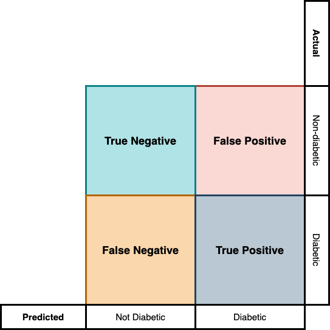
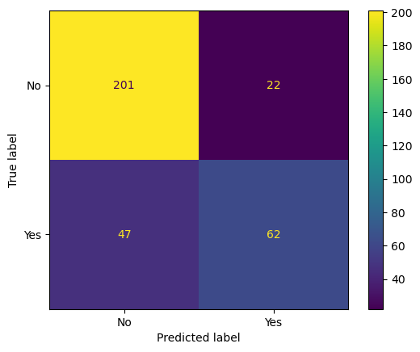

logistic_target_predict = predict(simplelogistic,features);3 Evaluating Your Model’s Performance
3.1 Did our model learn anything?
In the last chapter, we learned how to train our simple model on the given dataset. But how do we know that our model learned the patterns in the data? Well, think about the human learning scenario. How do we come to the conclusion that somebody has learned something?
Through assessments that test their knowledge.
Similarly, we can put our model to test and see how well they perform on these tests. One of the most common and initial tests you do once you have a trained model is to check the number of times your model predicted the target value correctly, i.e., in our case, how many times our model predicted the women to be diabetic and in fact the women had diabetes as per our data records. This measure of the percentage number of times the model predicts the target value correctly is called the accuracy of the model.
\[\text{Accuracy =} \frac{\text{No. of correct predictions}}{\text{Total no. of predictions}}\]
To compute the accuracy of our model we first need to generate the predicted values for our target. This can be achieved using the predict function in scikit-learn.
4-element Vector{Any}:
"Yes"
"No"
"No"
"No"Once we have the predicted values, we can pass the predicted values and the target values from our data to the accuracy_score function in the metrics module in scikit-learn to compute the accuracy of our model.
@sk_import metrics: accuracy_score
print(accuracy_score(target,logistic_target_predict))0.7921686746987951- The results show that our model has an accuracy of 79.22 %.
3.2 Is our model confused?
Although accuracy is a good measure to assess the quality of your model, most often, especially in classification type problems, they don’t tell us the complete story.
When we do prediction in a classification task, there arise four situations. For example, in our case:
- the model predicted the woman to be diabetic and was in fact diabetic
- the model predicted the woman to be non-diabetic but was diabetic
- the model predicted the woman to be diabetic but was not actually diabetic
- the model predicted the woman to be non-diabetic and was not diabetic
The first and last cases where our predictions aligned with the actual values are called true positives and true negatives respectively. The case where the model predicted the woman to be diabetic while she did not have diabetes is called a false positive case, and the case where the model predicted the woman to be non-diabetic but she was in fact diabetic is called the false-negative case. This is illustrated in Figure fig-confusion.

When we just focus on a classification model’s accuracy, all these information is hidden from us.
It is possible to generate a figure like Figure fig-confusion in scikit-learn. For that, you need two functions, the confusion_matrix function to generate the confusion matrix and ConfusionMatrixDisplay function to generate the plot.
# Generating the confusion matrix
@sk_import metrics: confusion_matrix
cf = confusion_matrix(target, logistic_target_predict)
# Loading the plotting library & confusion matrix plotting function
using PyPlot
@sk_import metrics: ConfusionMatrixDisplay
figure() # Open a new canvas to plot
# Generating the plot
disp = ConfusionMatrixDisplay(confusion_matrix=cf,display_labels=simplelogistic.classes_)
disp.plot() # Transferring the plot to the canvas
gcf() # Freezing the canvas and printing it.
3.3 Why our model’s confusion pattern matters?
You might still be thinking why these false rates and true rates matter since we already have the accuracy scores. The importance of the confusion matrix comes into play when we consider the consequences of our prediction. For example, if it’s a high consequence situation like predicting if somebody has early-stage cancer or not, miss-classifying a person as not having cancer, while they have cancer has a high cost. In such cases, the ML designer needs to look at the false negative rate more closely than the model’s overall accuracy. Whereas, in a low consequence situation like credit card approval prediction, the false positive rate matters more than the false negative rate. Because, with higher false negative rate, you might be denying a credit card to a person with a good credit score and fewer chances of defaulting whereas if you have high false positive rate, you will be approving credit cards to people whose chances of defaulting are high.
The measure we are interested in the first case where the cost of missing a positive is high is called the recall or sensitivity of our model. Recall can be computed from your confusion matrix using the formulae:
\[ \text{Recall =} \frac{\text{True Positives}}{\text{True Positives + False Negatives}}\]
true_neg, false_neg, false_pos, true_pos = cf
recall = true_pos / (true_pos + false_neg)0.5688073394495413The measure we are interested in the second case, where the cost of false positive is higher is called the precision of our model. Precision can be computed using the formula:
\[\text{Precision =} \frac{\text{True Positives}}{\text{True Positives + False Positives}}\]
precision = true_pos / (true_pos + false_pos)0.7380952380952381The above results say that our model has high chances of missing a diabetes patient (due to low recall) and low chances of generating a false positive (high precision). In other words, if the model predicted you as having diabetes, there is a high chance you have diabetes, but if you were diagnosed non-diabetic by the model, you may or may not be diabetic.
If your model is used in a scenario where both false positives and false negatives have high consequences, a better metric to watch for is the F1 score. F1 score is also a better metric than accuracy score for evaluating model’s performance when you have imbalances dataset (Imbalanced datasets are datasets that have unequal number of data points across its classes. For e.g., our diabetic dataset will be an imbalanced data if 90% of our data are that of non-diabetic people and only 10% is that of diabetic people.). F1 score is the weighted average of precision and recall and can be computed using the formula:
\[\text{F1 score = } 2 \times \frac{\text{Recall} \times \text{Precision}}{\text{Precision + Recall}}\]
f1 = (2 * precision * recall) / (precision + recall)0.6424870466321243Although we had very good accuracy score, the F1 score for our model suggests that our model isn’t that impressive.
To compute the recall, precision, f1 score, and accuracy with lesser lines of code, you can use the classification_report function from metrics module in scikit-learn.
@sk_import metrics: classification_report
print(classification_report(target, logistic_target_predict)) precision recall f1-score support
No 0.81 0.90 0.85 223
Yes 0.74 0.57 0.64 109
accuracy 0.79 332
macro avg 0.77 0.74 0.75 332
weighted avg 0.79 0.79 0.78 332- The first line list the precision, recall, and f1 score with respect to the target “No” and the second with respect to the target “Yes”.
- In the above computations, we have calculated precision, recall, and f1 score with respect to the target “Yes”. You can check the values we have got manually with the values printed in the classification report.
Code Summary for Chapter 3
# Generating the predictions from the trained model
logistic_target_predict = predict(simplelogistic,features);
# Calculating the accuracy score
@sk_import metrics: accuracy_score
print(accuracy_score(target,logistic_target_predict))
# Generating the confusion matrix
@sk_import metrics: confusion_matrix
cf = confusion_matrix(target, logistic_target_predict)
# Loading the plotting library & confusion matrix plotting function
using PyPlot
@sk_import metrics: ConfusionMatrixDisplay
figure() # Open a new canvas to plot
# Generating the plot
disp = ConfusionMatrixDisplay(confusion_matrix=cf,
display_labels=simplelogistic.classes_)
disp.plot() # Transferring the plot to the canvas
gcf() # Freezing the canvas and printing it.
# Generating the classification report
@sk_import metrics: classification_report
print(classification_report(target, logistic_target_predict))